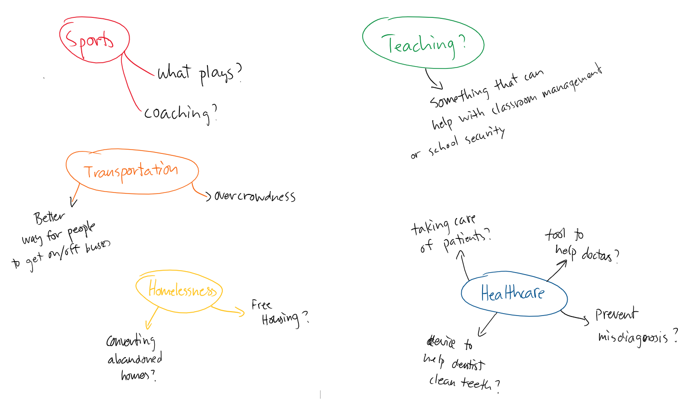
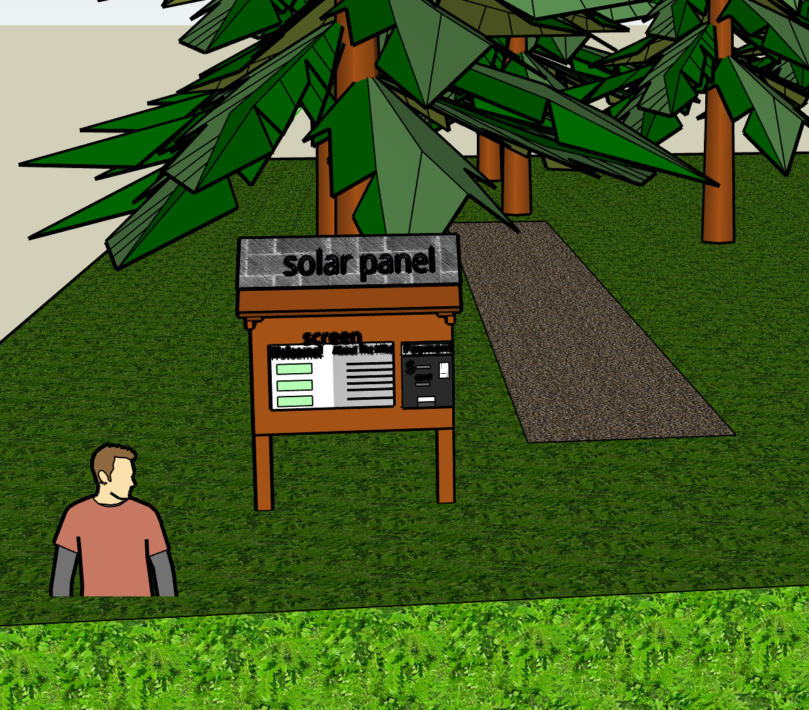

Overview
Peak to Peak was a quarter long project worked on by myself and three other peers for our informatics class that focused on learning more about the process that goes behind user centered design. It allowed us to gain a better understanding on human-computer interaction, design thinking, and incorporating the social side of technology in our design process. This project served as a way for us to see how designers practice responsibly by taking this project and going through each stage that goes on in the design cycle.
Objective
The goal of this project is to investigate and address problems regarding information for a specific user group of our choosing. We had to figure out what group of people we wanted to serve and what problem area needs to be addressed for that user group. The end objective is to be able to take this information and create a product that will help address these issues. The project will consist of iterating through each design process in order to produce a viable solution for our problem.
Approach
Since this was a group project, we started off brainstorming issues within areas of interests that we are familiar with. Before coming up with a specific user group, it was important to first decide on what general topic to look for information on. After deciding a user group, we would then create a problem statement by looking for issues regarding information technology that the user group is facing. After the problem statement we needed to know more about our users, so the next stage in our project dealt with user research. From there we then dove into drafting our design by sketching and wireframing our creation. Lastly we would then create a prototype which would then go under usability testing to hear feedback.
My Role
As a team, we all equally participated in each early stage of the project. However some parts of the user research and final design stages were branched out and so we all worked on different aspects. During the user research, I focused on reaching out to members of the Washington Trails Association for their input. For the prototyping I assisted with the UI design on Figma and modeling a 3D variant of our product on SketchUp.
Project Team
- Daniel Nguyen
- David Chiang
- Hao Yu
- Jasmine Kennedy
Process
Problem Statement and Ideation
Because we have the ability to pick a user group of our choosing, my team and I decided with a topic that is familiar to each of us, which is hiking. Because each of us has experience with hiking in the pacific northwest, it was easier for us to figure out what problems could hikers have in regards to information. The initial target group that my team drafted was Washington State hikers, with the problem being the lack of information regarding weather and obstacles while hiking.
To gain a better understanding of what issues we can help solve for hikers, we conducted brief research to find a key problem: The Washington Trails Association currently has trouble keeping up with trail maintenance. A lack of trail maintenance comes with unexpected hazards for hikers, therefore our team wanted to pursue this issue.
User Research
In order to learn more about our users, we conducted different research
methods for the sake of being able to gain a better understanding of the problem at hand. In the process,
we were able to reach out to different individuals regarding our issue, and we proceeded to contact them
through phone calls as well as emails.
We created a Google form to ask hikers about their issues and opinions on hiking, and we made posts on Facebook
asking hikers to fill out our form. This allowed us to better understand the needs and wants of hikers in our area,
and the responses given gave us more information about how each hiker has a different opinion on the hike depending
on their experiences with hiking. Beginner hikers would like to know more about gear related issues and preparation
while the more experienced hikers were more concerned about the trailhead itself.
One of the individuals we were able to reach out through email was Anna Roth, a Hiking Content Manager working for the Washington Trails Association (WTA) who researches hikes to improve WTA’s hiking guide. With Anna, we were able to learn a lot about what information new hikers lack and how that negatively impacts the organization as well as the hikers themselves. Specifically, we learned that:

- hikers often lack information regarding passes and permits for hiking on trails, as well as the condition of the trail.
- hikers are often not prepared enough for their trip due to a substantial difference in weather conditions between the city and the mountains.
A last piece of research we did was conducting an interview with REI representative Joe Nelson (February 12, 2019) to learn more about their views on what critical information hikers often lack. We believe interviewing an REI representative would be a good fit for our research since REI is a prominent outdoor gear, rental, and classes store, as well as offering classes in various locations including beginner map and topography classes, and beginner tent and overnight classes. From Joe, we were able to learn a couple of problems that many beginner hikers encounter, being that they:
- lack the 10 essential, weather based gear (layers, windbreakers, crampons, camelback, etc.)
- lack of skill or knowledge of what to do in situations they may encounter.
We learned in great detail regarding how beginner hikers misread weather conditions (if it’s getting foggy or starting to snow they often push on to get to the top), animal sightings, getting lost and not knowing the steps to take to be rescued (they don’t know how to bare down and set up camp/ how to, or keep wasting energy moving around or yelling).
Personas
Draft Design
After being more informed about our users, we ventured out to test what form our product should be in that would be able to accommadate features that will help solve issues that we learned about our user group. We've decided on an electronic information board that would be built near the entrance of the trailhead where hikers will typically find the route information. From there we decided to wireframe and sketch designs that would make this information board useful to our user group and help solve their problems such as payment for parking or being able to report or be informed about hazards along the trail.
To further showcase what form of product we are trying to design, we utilized Sketchapp to design a 3D model to illustrate what we mean by electronic information board.

Interface and User Flow
We had taken our initial draft design to go through user feedback from other design groups in the class. Taking into account both feedback received and our user research, we constructed the interface for our product on Figma.

The features we implemented in our interface was a result of what we learned about our users and how it can help solve their current issues. Some of these features include direct access to purchase parking passes for the hiking trail, being able to report any obstacles or hazards, and updated information on the trail. Users will be able to select the parking pass they want and make a direct purchase in which Peak to Peak will print out a pass for the user. Information of the trail includes weather conditions, terrain, what to expect on the trail, ecology, and history. Peak to Peak will also allow for users to report anything about the trail they see, as well as contact emergency services.
Conclusion
Overall there is still a lot of work needed to be done for this project to become reality. Through research and feedback, there is still a lot of flaws that need to be worked on. More research needs to be done to see how our product can be powered besides relying on solar energy, and proper UI design needs to be applied to our interface. Further usability testing is required and physical design changes need to be made as well. But overall the concept and purpose of the design meets our expectations and helps our chosen user group. Our team put in weeks of effort to research our users to better understand their problems, and drafted a product that can assist with their issues.